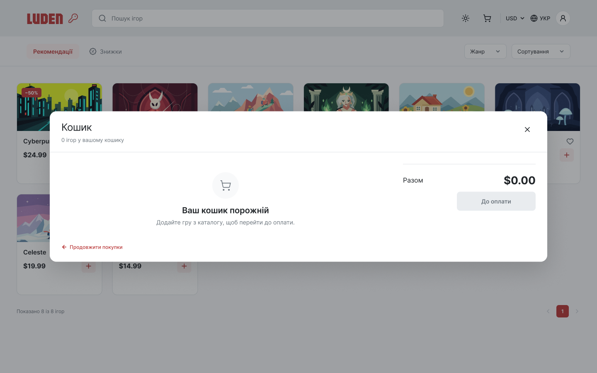
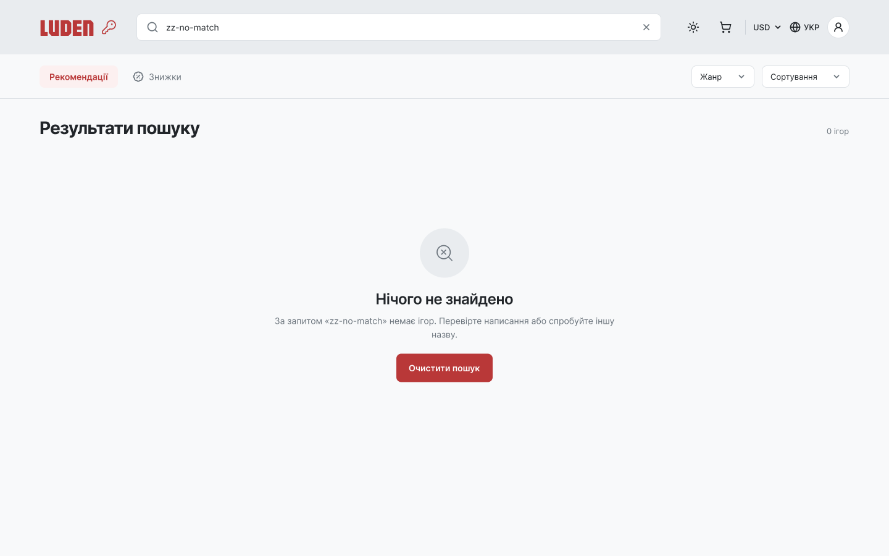
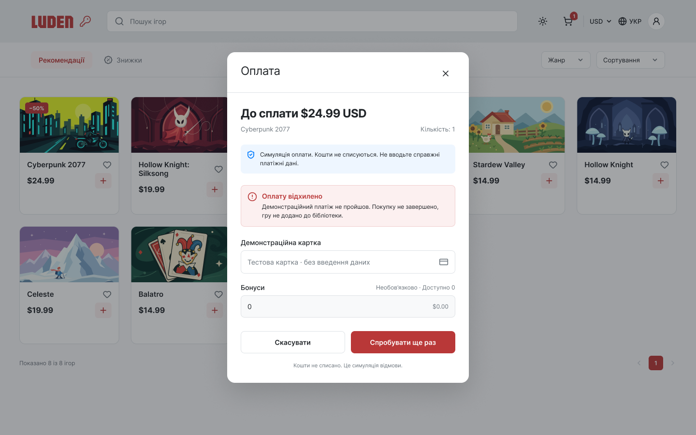

Зауваження та рекомендації
Кадри, переходи та відкриті питання прототипу Luden.
01 · Кошик і сума
M-02 показує одну Cyberpunk 2077 за $24.99. Видалення відкриває M-02-E з підсумком $0.00. Кнопка «До оплати» у порожньому кадрі без переходу.
Пов’язані перевірки й рішення — F-T03, D-05.

02 · Бонуси та межі релізу
M-03 показує 0 доступних бонусів і суму $24.99 USD. Оформлення без списання входить до Release MVP. Списання бонусів відкладено.
Пов’язані перевірки й рішення — AC-07.2, F-04, D-02.
03 · Повернення з порожнього пошуку
Очищення S-02-B веде до S-02-A. Якщо відкрити стан без збігів після покупки, цей маршрут втрачає стан бібліотеки. Поле «Жанр» не має налаштованої дії.
Пов’язані перевірки й рішення — AC-04.3–4, F-01, F-02.

04 · Права покупця
У покупецьких кадрах немає керування товарами. Для перевірки BR-02 потрібні запити без автентифікації та з ролями покупця й Admin.
Пов’язані перевірки й рішення — BR-02, APP-05, Q-08.
05 · Оплата й доступ до бібліотеки
«Підтвердити» в M-03 веде до S-03-B. Відмова відкривається окремим потоком M-03-E з діями скасування й повтору. Збереження доступу після відмови перевіряється в застосунку.
Пов’язані перевірки й рішення — F-T06, APP-03, APP-04.

06 · Відновлення пароля
Посилання «Забули пароль?» видно на S-01. Реакцію не налаштовано. Надсилання листа відкладено за SRC-07.
Пов’язані перевірки й рішення — SRC-07, F-04.